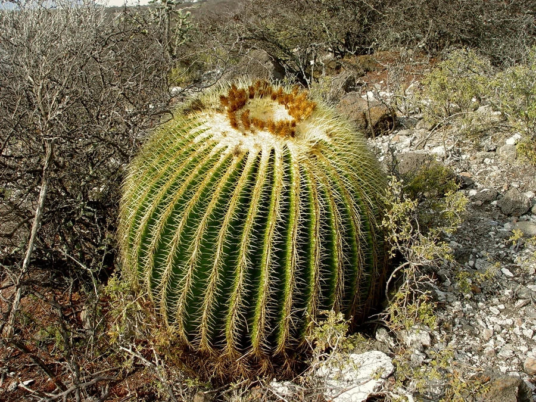

多肉植物 · 植物界
金琥 Echinocactus grusonii

仙人掌科大型球状多肉，金黄色的刺密布球体，气势华贵又称金刺球，原产墨西哥中部，野生种群受威胁。
- 分类
- 门被子植物门纲木兰纲目石竹目科仙人掌科属金琥属
- 栖息环境
- 墨西哥中部的干旱高原与砾石坡地，喜光、耐旱、怕严寒
- 地理分布
- 原产墨西哥中部，世界各地广泛盆栽观赏
- 保护级别
- IUCN 濒危（EN）；CITES 附录Ⅱ
物种志
金琥为仙人掌科金琥属的球状多肉植物，球体初为扁球形，长大后逐渐呈圆柱状，直径可达 80–100 厘米，高约 1.3 米。球体具 20–30 条棱，棱上密生金黄色坚硬直刺，刺长约 3 厘米。花顶生于球体中央，钟形，黄色，直径 3–5 厘米，花期 5–7 月；果实椭圆形，种子黑色。
金琥原产墨西哥中部干旱高原，喜阳光充足、温暖干燥的环境，耐旱而不耐寒，冬季需保持 5℃ 以上。它生长缓慢，直径 30 厘米的球体往往需要十几年才能长成，因此大球价格较高。因其球体圆满、金刺耀眼，被视为“旺财”的吉祥植物，观赏价值高，但野生种群因采集和栖息地破坏而数量下降，已被列入国际保护物种名录，购买时应选择人工繁殖个体。
形态与习性
- 株高球体直径可达 80–100 厘米，高约 1.3 米
- 花期5–7 月，黄色钟形花顶生
- 果期7–9 月，果实椭圆形
- 光照喜充足阳光，夏季可适度遮阴
- 水分耐旱，生长季每月浇水 1–2 次即可
- 土壤疏松、排水良好的颗粒土，含石灰质
- 繁殖以播种繁殖为主
- 主要用途室内盆栽观赏
趣味知识
- 金琥球体可长到直径近 1 米，但生长极慢，大球需要数十年才能养成。
- 球顶密布的金黄色硬刺可反射强烈阳光，同时防御动物啃食。
- 野生金琥因长期被采挖而数量锐减，已被列入濒危物种名录。
- 金琥的棱数随年龄增加，幼球棱少、成球棱多，可据此粗略判断树龄。